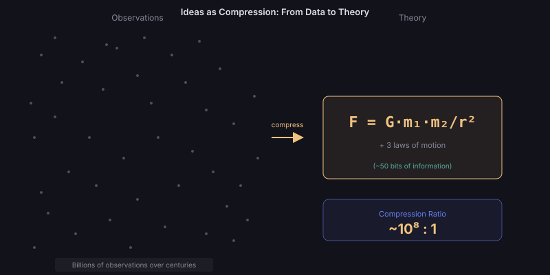

Ideas as Compression
The most enduring ideas in history share a remarkable property: they compress vast amounts of observed reality into compact, transmissible forms. Newton's three laws replaced thousands of individual observations about motion. Darwin's mechanism replaced countless separate explanations for biological diversity. Einstein's E = mc² compressed the relationship between matter and energy into five symbols.
From an information-theoretic perspective, a great idea is one that achieves a high compression ratio — the ratio of raw data it explains to the description length of the idea itself.
Why Compression Matters
Compression is not just aesthetic elegance — it is the fundamental mechanism by which understanding advances. An idea that compresses is one that has found a pattern in the noise. The higher the compression ratio, the deeper the pattern discovered.
This connects directly to prediction: if you can compress past observations into a short rule, that rule generates predictions about future observations. Compression = understanding = prediction.
Shannon's Framework
A Mathematical Theory of Communication (1948)
Claude Shannon's paper — itself one of the most influential ideas of the 20th century — established the mathematical foundation for measuring information. His key insight: information is surprise.
A message that tells you something you already know carries zero information. A message that is completely random also carries no useful information (it can't be compressed). Maximum information lies between — in messages that are surprising but structured.
Shannon's paper has been cited over 140,000 times and spawned the entire field of information theory, coding theory, and modern digital communications.
Shannon entropy measures how "surprising" a source of messages is, on average. If someone always says "hello," their entropy is zero — you already know what they'll say. If they pick randomly from a million words each time, their entropy is about 20 bits per word — maximum surprise but no structure. The most interesting sources — and the most interesting ideas — live in between: surprising enough to carry new information, structured enough to be compressible.
Kolmogorov Complexity
The Shortest Possible Description
Kolmogorov complexity asks: what is the length of the shortest computer program that produces a given output? This is the ultimate compression — the minimum information content of an object.
Applied to ideas: the Kolmogorov complexity of an idea is the minimum description needed to fully reconstruct it. Great theories have low Kolmogorov complexity relative to the data they predict — they are short programs that generate vast, accurate predictions.
Consider the difference between describing a circle and describing an irregular coastline. "All points at distance r from centre c" — a few bytes — generates every point on the circle (infinite data). Describing a coastline to the same precision requires a description nearly as long as the coastline itself (no compression). Newton's laws are like the circle description — short programs that generate accurate predictions about an enormous range of phenomena.

Ideas as Compression
Left: billions of individual observations accumulated over centuries. Right: Newton's single equation F = Gm₁m₂/r² plus three laws of motion. The compression ratio exceeds 10⁸:1 — roughly 50 bits of theory explaining the motion of every object in the observable universe.
The Compression Hall of Fame
Ideas Ranked by Compression Power
We can roughly estimate the "compression ratio" of history's most powerful ideas — the ratio of data they explain to their own description length:
Newton's Laws
Three laws + one equation (F = ma) compress the motion of every object in the observable universe — from falling apples to orbiting planets to rocket trajectories. Before Newton, each type of motion required its own explanation (Aristotle's "natural motion," "violent motion," heavenly spheres). After Newton: one framework, three sentences, universal coverage.
The compression ratio is staggering: three short sentences predict the behaviour of ~10⁸⁰ particles.
Natural Selection
One mechanism — variation + selection + inheritance — compresses the explanation for every adaptation in every organism that has ever lived. Before Darwin, each species required its own creation story. After Darwin: one algorithm, infinite diversity explained.
The idea is so compressive that it extends beyond biology: to economics (market selection), to technology (evolutionary algorithms), to culture (memetics). Each extension multiplies the compression ratio.
Shannon's Entropy
One formula compresses the limits of all possible communication systems. Before Shannon, each communication channel was understood ad hoc. After Shannon: one framework determines the maximum information capacity of any channel, regardless of its physical substrate — copper wire, optical fibre, radio waves, DNA.
Occam's Razor as Compression
The Connection to Minimum Description Length
Occam's Razor — "do not multiply entities beyond necessity" — is the intuitive version of a deep information-theoretic principle: among theories that explain the same data, prefer the shortest (lowest Kolmogorov complexity).
This is not mere aesthetics. There is a mathematical result (Solomonoff induction) showing that shorter hypotheses are a priori more likely to be true, assuming a universal prior. The reason: there are exponentially more long programs than short ones, so a short program that fits the data is less likely to be a coincidence.
Imagine two explanations for the same data. Explanation A is 10 pages long. Explanation B is 1 page long. Both perfectly fit all observations. Which is more likely to be true? Consider: there are vastly more possible 10-page theories than 1-page theories. Finding a 1-page theory that fits is like finding a needle in a small haystack — it probably reflects a real pattern. Finding a 10-page theory that fits is like finding a needle in a massive haystack — it might just be an elaborate coincidence (overfitting).
Novelty and Information Content
Surprise as a Measure of Idea Value
From Shannon's perspective, the information content of an idea is proportional to how surprising it is given what was already known. An idea that everyone already expected carries zero information. An idea that nobody anticipated carries maximum information.
This suggests a metric for evaluating ideas: their conditional surprise — how much they change the probability distribution over beliefs.
The most impactful ideas in history were also the most surprising:
• Heliocentrism (Earth orbits the Sun — overturning millennia of geocentric assumption)
• Germ theory (invisible organisms cause disease — overturning miasma theory)
• Quantum mechanics (reality is probabilistic at small scales — overturning determinism)
Each carried enormous information content precisely because it required revision of deeply-held prior beliefs.
The Compression-Spread Trade-off
Why the Most Compressed Ideas Don't Always Win
There is a tension between compression power and memetic fitness. The most compressed form of an idea (e.g., Einstein's field equations) may be the truest and most powerful — but it requires extensive training to decompress (understand).
Ideas that spread furthest are often partially decompressed — simplified versions that sacrifice some compression power for accessibility:
Full compression: Gμν + Λgμν = (8πG/c⁴)Tμν → Known to ~10,000 physicists
Partial decompression: "Space-time is curved by mass" → Known to millions
Maximum decompression: "Gravity bends light" → Known to billions
At each decompression step, the idea loses precision but gains accessibility — and therefore spread.
AI as Universal Decompressor
If the trade-off between compression and accessibility is the fundamental barrier to idea spread, then AI systems capable of "decompressing" highly compressed ideas for any audience could break this trade-off entirely.
An AI that can take Einstein's field equations and generate an intuitive explanation tailored to a specific person's background knowledge would allow maximally compressed (and therefore maximally powerful) ideas to spread as widely as simplified slogans — without losing their precision.
This would eliminate the evolutionary pressure toward oversimplification — the most compressed, truest form of an idea could also be the most accessible, once AI handles the decompression on demand.
This assumes AI can achieve faithful decompression (lossless translation to different abstraction levels). Current LLMs sometimes introduce errors in this process. The speculation depends on AI reaching a level of conceptual understanding that is not yet demonstrated.
Signal, Noise, and Idea Quality
Channel Capacity for Ideas
Shannon's channel capacity theorem states that every communication channel has a maximum rate at which information can be transmitted reliably. Applied to idea propagation:
The channel = any medium through which ideas travel (journals, conferences, social media, conversation).
The noise = competing ideas, misinformation, misunderstanding, and attention limits.
The capacity = the maximum rate at which genuine new understanding can propagate through that channel.
As noise increases (more papers, more content, more claims), the effective capacity for transmitting genuine insight may actually decrease — even as raw throughput increases.
Open Questions
- Can we formally measure the "compression ratio" of a scientific theory — and use it to predict which theories will endure?
- Is there a fundamental limit to how compressed a useful idea can be (an "idea Planck length")?
- Does the channel capacity for genuine insight scale with total information production — or has it already saturated?
- Can AI identify ideas with high compression potential before humans recognise their significance?
- Is there a formal relationship between an idea's compression ratio and its long-term citation trajectory?